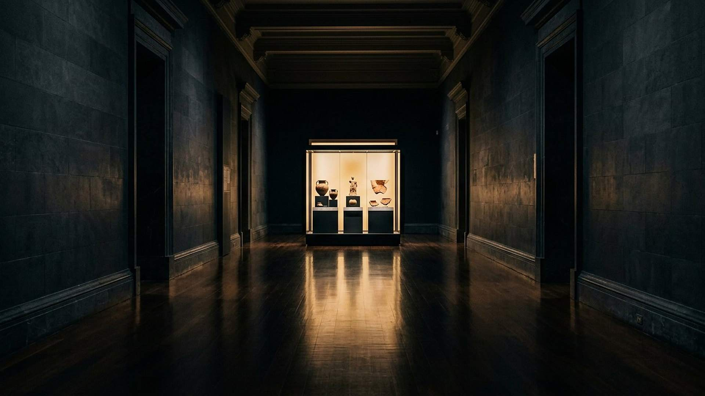

Comprendre
Glossaire
Les mots techniques employés dans le musée, expliqués simplement.
ADN
Acide désoxyribonucléique : la molécule qui porte l’information héréditaire sous forme d’une séquence de quatre bases.
ATP
Adénosine triphosphate : la « monnaie énergétique » universelle des cellules.
Codon
Groupe de trois bases de l’ADN ou de l’ARN qui code un acide aminé.
Connectome
Carte complète des connexions neuronales d’un cerveau ou d’une région du cerveau.
Cylindre de Cyrus
Objet d’argile inscrit par Cyrus II, conservé au British Museum (BM 90920), qui décrit sa politique de restauration des sanctuaires.
Dynamo
Mécanisme par lequel un noyau planétaire liquide en mouvement produit un champ magnétique.
Echolocation
Technique de localisation par émission de sons et écoute des échos.
Fond diffus cosmologique
Rayonnement fossile émis quand l’univers est devenu transparent, vers 380 000 ans après le commencement.
Géodynamo
Dynamo du noyau terrestre, à l’origine du champ magnétique de la Terre.
Hémoglobine
Protéine des globules rouges qui fixe et transporte l’oxygène grâce à quatre sites de liaison coopératifs.
Ḥûg
Mot hébreu d’Isaïe 40:22, traduit par « cercle » : la voûte circulaire décrite au-dessus de la terre.
Kératine
Protéine structurelle des cheveux, des ongles, des plumes et des cornes.
Lecture prophétique
Niveau d’interprétation du site : la façon dont une prophétie est comprise, distincte du fait brut.
Magnétosphère
Région autour d’une planète où son champ magnétique domine celui du vent solaire.
Oligosaccharide
Sucre court, présent en abondance dans le lait maternel, qui nourrit le microbiote du nourrisson.
Ontogénèse
Développement d’un individu depuis la cellule initiale jusqu’à l’âge adulte.
Ostracon
Tesson de poterie utilisé comme support d’écriture ; les ostraca de Lakish en sont un exemple célèbre.
Photosynthèse
Processus qui convertit la lumière en énergie chimique et fixe le carbone atmosphérique.
Protocellule
Structure chimique simple entourée d’une membrane, étudiée comme étape possible vers la cellule.
Qumrân
Site du désert de Juda où furent découverts, à partir de 1947, des manuscrits bibliques anciens.
Réglage fin
Situation où une variation faible d’un paramètre physique rendrait l’univers stérile ; l’interprétation de ce fait est discutée.
Ribosome
Machine moléculaire qui assemble les protéines en lisant l’ARN messager.
Sept temps
Expression de Daniel 4 comprise comme sept années prophétiques de 360 jours, soit 2 520 ans dans la lecture retenue.
Tombolo
Cordon de sable qui relie une île au continent ; celui de Tyr s’est formé après la chaussée d’Alexandre.
Tribologie
Science du frottement et de l’usure, utile pour comprendre les articulations.
Van der Waals
Forces d’attraction faibles entre molécules, qui expliquent l’adhésion du gecko.
Ziggourat
Temple-tour à étages de la Mésopotamie antique.